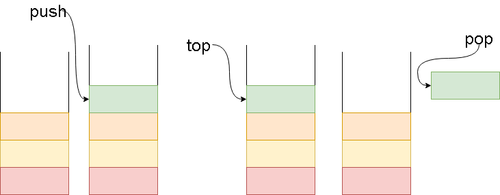

# Estructuras de datos en Java
Estructura de datos: Pila, Cola, Lista, Arbol, Grafos.
Pila

Definición
Una pila (stack en inglés) es una lista ordenada o estructura de datos que permite almacenar y recuperar datos, siendo el modo de acceso a sus elementos de tipo LIFO (del inglés Last In, First Out, último en entrar, primero en salir). Esta estructura se aplica en multitud de supuestos en el área de la informática debido a su simplicidad y capacidad de dar respuesta a numerosos procesos.
Para el manejo de los datos cuenta con dos operaciones básicas: apilar (push), que coloca un objeto en la pila, y su operación inversa, retirar (o desapilar, pop), que retira el último elemento apilado.
En cada momento solamente se tiene acceso a la parte superior de la pila, es decir, al último objeto apilado (denominado TOS, Top of Stack en inglés). La operación retirar permite la obtención de este elemento, que es retirado de la pila permitiendo el acceso al anterior (apilado con anterioridad), que pasa a ser el último, el nuevo TOS.
Las pilas suelen emplearse en los siguientes contextos:
Evaluación de expresiones en notación postfija (notación polaca inversa).
Reconocedores sintácticos de lenguajes independientes del contexto.
Implementación de recursividad.
En un sistema operativo cada proceso tiene un espacio de memoria (pila) para almacenar valores y llamadas a funciones.
Una pila acotada es una pila limitada a un tamaño máximo impuesto en su especificación.
Por analogía con objetos cotidianos, una operación apilar equivaldría a colocar un plato sobre una pila de platos, y una operación retirar equivaldría a retirarlo.
Cola
Lista
Mapeo
Arbol
Cola con prioridad
Grafos